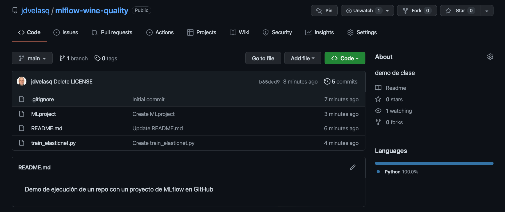
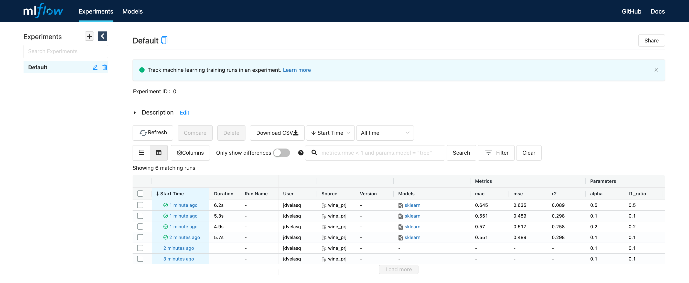
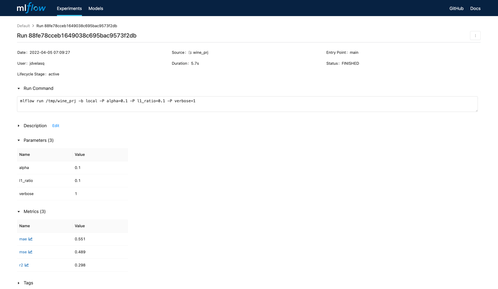
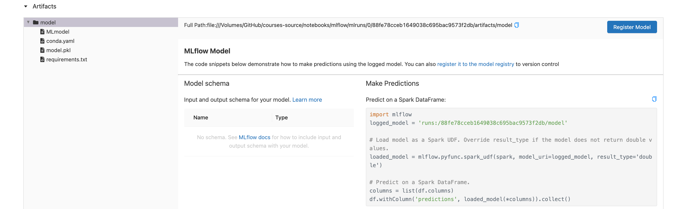
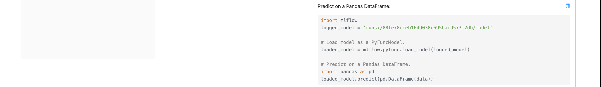

Creación de un proyecto básico en GitHub
Ultima modificación: Mayo 14, 2022
Limpieza del diretorio
[1]:
!rm -rf mlruns
Repo en GitHub

Dockerfile
FROM condaforge/miniforge3
RUN pip install mlflow \
&& pip install pandas \
&& pip install scikit-learn \
&& pip install cloudpickle
Creación de la imagen
Cree el contendor reemplazando su nombre de usuario:
$ docker build -t jdvelasq/mlflow:example .
$ docker push jdvelasq/mlflow:example
Ejecución del projecto en GitHub
[ ]:
#
# Ejecución con parámetros por defecto
#
!mlflow run git@github.com:jdvelasq/mlflow-wine-quality.git
2022/06/03 22:41:44 INFO mlflow.projects.utils: === Fetching project from git@github.com:jdvelasq/mlflow-wine-quality.git into /var/folders/34/8tnnc98d5bv6wy7xzfb0qwhh0000gn/T/tmp9fqk1t6o ===
The authenticity of host 'github.com (140.82.114.4)' can't be established.
ED25519 key fingerprint is SHA256:+DiY3wvvV6TuJJhbpZisF/zLDA0zPMSvHdkr4UvCOqU.
This key is not known by any other names
Are you sure you want to continue connecting (yes/no/[fingerprint])?
Ejecución en el ambiente local con parámetros suministrados por el usuario
[ ]:
!mlflow run /tmp/wine_prj -P alpha=0.2 -P l1_ratio=0.2 -P verbose=1
[ ]:
!mlflow run /tmp/wine_prj -P alpha=0.1 -P l1_ratio=0.1 -P verbose=1
[ ]:
!mlflow run /tmp/wine_prj -P alpha=0.5 -P l1_ratio=0.5 -P verbose=1
MLflow ui
Para visualizar la interfase use:
mlflow ui
Nota: En docker usar:
mlflow ui --host 0.0.0.0
con:

Detalles de la corrida
  